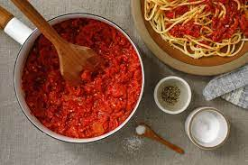

Red Sauce with Anchovy Paste

Description
This red sauce is made with canned tomatoes and uses
italian sausage and anchovies to provide a ton of flavor.
Ingredients
- Extra virgin olive oil
- 1 medium onion (yellow or white)
- 4-6 cloves garlic
- 2-3 cans of anchovy fillets (retain oil)
- 1 lb italian sausage (sweet or hot)
- 2 28-ounce cans of crushed tomoatoes
- 1 14-ounce can of chopped tomoatoes
- Dried italian spices (oregano, thyme, basil)
- Salt and fresh-ground black pepper
Steps
-
Finely chop the onion and add it to a large pot
-
Add a generous amount of olive oil and cook on medium high until beginning to soften
-
While the onion is beginning to cook mince your garlic
-
After the onion has begun to soften (about 5-7 min) add the minced garlic, the dried herbs
and the anchovy fillets with their oil.
-
After the garlic begins to get fragrant (1-2 min) add the sausage.
If you got sausage links you can either remove it from the casing or
just chop it into smaller pieces and add it.
-
When the sausage has begun to brown the anchovy fillets should be mostly or
completely broken down. At this point add all of the tomatoes to the pot.
-
Turn the heat down to low and let the sauce simmer for about 2 hours
-
The sauce can be used right away or it can be frozen for later. It
will keep in the fridge for about 2 weeks.